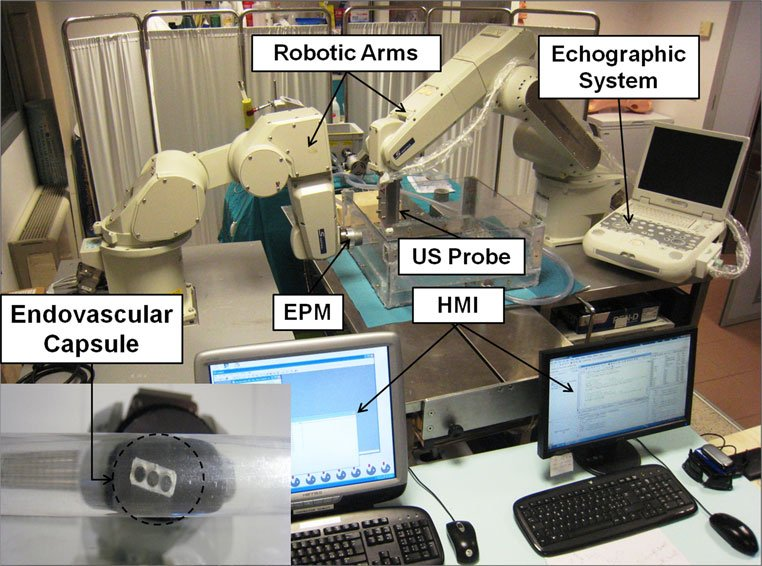

Magnetic navigation · microvast_tognarelli2012
MicroVAST
MicroVAST robotic magnetic navigation platform (external permanent magnet on a robot arm, robotic ultrasound tracking)


- Family
- Magnetic navigation (magnetic-navigation)
- Devices
- 2012: capsule 5 mm x 10.6 mm, 0.75 g, with an internal NdFeB N52 magnet of 6 tablets (3.2 mm x 1.6 mm) (tognarelli2012_magnetic Methods); 2015-16: soft-tethered endovascular device (dimensions N.R. in the abstracts)
- Degrees of freedom
- 6 (alekseeva2025_design Table 14): Mitsubishi RV-3SB 6-DoF arm moves the EPM; RV-6SL 6-DoF arm moves the US probe (tognarelli2012_magnetic Methods)
- Push
- Magnetic
- Twist
- Other
- Tested up to
- Phantom
- Sim-to-real
- None found — No simulation-trained controller found for this robot.
Testing
- Highest level
- Phantom
- What was tested
- soft-tethered device: tracking and locomotion tests on the platform (mura2016_computer abstract; phantom type N.R.; alekseeva2025_design: 'ex vivo phantom studies (TRL3)'). The 2012 tests used the untethered capsule: 300 mm path of Plexiglas tube, PVC tube and a freshly excised porcine vessel in a flow loop at 2.3, 3.1 and 3.7 L/min, with and against flow (tognarelli2012_magnetic Methods)
- Key numbers
- EPM NdFeB N52, remanence 1.48 T; arm drag speed 5 mm/s (tognarelli2012_magnetic Methods); 3D US tracking error 6.4 +/- 2.8 px, mean displacement from the pre-operative path 13.6 +/- 4.5 mm, 12.2 +/- 1.5 ms per frame (mura2016_computer abstract)
Mechanism
- Push (translation)
- magnetic (dragging by the moving external permanent magnet)
- Twist (rotation)
- EPM pose (robot arm)
- Device range
- N.R.
- Target anatomy
- cardiovascular (atherosclerotic arteries, tognarelli2012_magnetic Introduction); listed as neuroendovascular in alekseeva2025_design Table 14
Sensing and interface
- Force sensing
- none
- Leader and haptics
- Phantom Omni haptic input device moves the EPM arm (tognarelli2012_magnetic Methods)
- Imaging
- ultrasound: Esaote CA430E convex probe (3.5-5 MHz) on the second arm with real-time US servoing (tognarelli2012_magnetic); 3D US tracking (mura2016_computer)
- Sterility
- N.R.
Size
- Footprint (mm)
- N.R.
- Mass (kg)
- N.R. (EPM 0.4 kg, 51 mm diameter x 25 mm, tognarelli2012_magnetic Methods)
Simulation
- Simulation model
- none found (analytical magnetic and fluid-drag model, tognarelli2012_magnetic)
- Sim-trained controller
- none found
Versions
- Lineage
- 2012: wireless magnetic capsule dragged by an EPM on a 6-DoF arm, second arm holds the US probe (tognarelli2012_magnetic); 2015: 2D US tracking of soft-tethered devices on the MicroVAST platform (mura2015_ultrasound, abstract); 2016: 3D US tracking of a magnetic-dragged soft-tethered device (mura2016_computer, abstract)
Sources
- Magnetic propulsion and ultrasound tracking of endovascular devices · Journal of Robotic Surgery, 2011 · doi:10.1007/s11701-011-0332-1 [tognarelli2012_magnetic]
- Ultrasound-based tracking strategy for endoluminal devices in cardiovascular surgery: Computer-assisted robotic strategy for autonomous intervention · The International Journal of Medical Robotics and Computer Assisted Surgery, 2014 · doi:10.1002/rcs.1603 [mura2015_ultrasound]
- A computer-assisted robotic platform for vascular procedures exploiting 3D US-based tracking · Computer Assisted Surgery, 2016 · doi:10.1080/24699322.2016.1185467 [mura2016_computer]
- The Design of Endovascular Robots for Cardiac Interventions: A Survey · Journal of Field Robotics, 2024 · doi:10.1002/rob.22480 [alekseeva2025_design]
Notes
- Notes
- Family: magnetic. The catheter-like device (soft-tethered) appears only in the 2015-16 papers, read as abstracts; Mura 2016 (T&F, CC BY-NC) and Mura 2015 (Wiley) are on the manual-download list and would decide the device size and test level. alekseeva2025_design Sec. 4 calls the field source an electromagnet; tognarelli2012_magnetic uses a permanent magnet.
This record
- Read level
- full — full (tognarelli2012_magnetic); abstract (mura2015_ultrasound, mura2016_computer)
- Picture
- tognarelli2012_magnetic Fig. 2 ↗ — licence: publisher copyright; grade C
- Picture changes
- native extract from tognarelli2012_magnetic-propulsion_JRS.pdf p. 3; no crop; none upscaled
- Found by
- actuated-tip: Search of actuated-tip and magnetic devices.
- Data
- JSON · YAML:
records/robots/microvast_tognarelli2012.yaml - Correction
- Suggest a correction [repository not created yet]